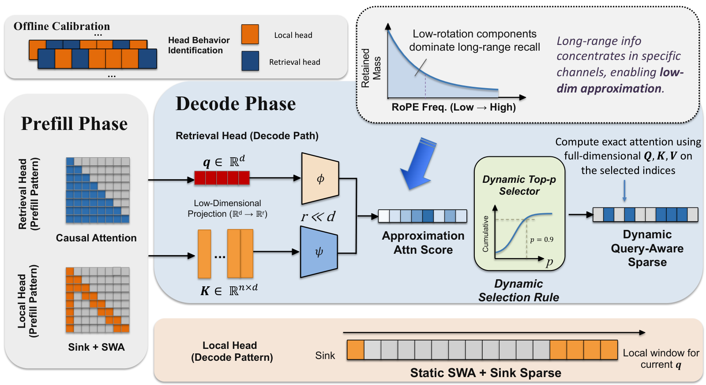
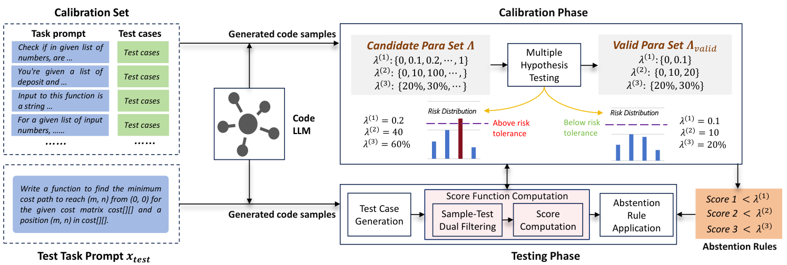
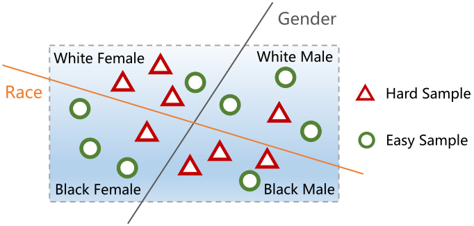
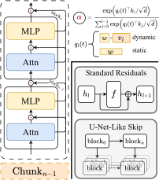
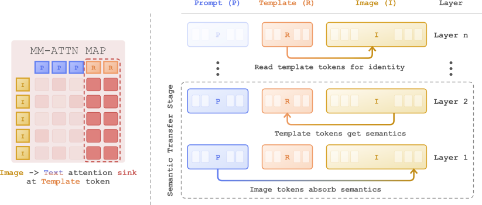
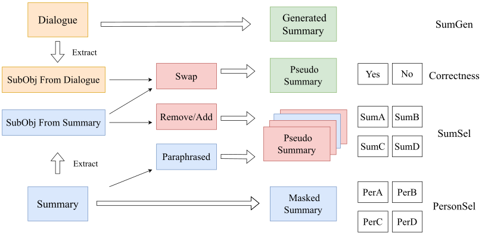

Artificial Intelligence Researcher · Intern
Shanghai, China
Draft models and speculative decoding for GLM.
M.Sc. Student · Computer Science
Hi, I'm Yanke Zhou (Richard), a master's student in Computer Science at Nanjing University. I received my B.Sc. in Computer Science from Nanjing University in 2024.
My work spans efficient LLM architecture and inference optimization.
Artificial Intelligence Researcher · Intern
Shanghai, China
Draft models and speculative decoding for GLM.
Artificial Intelligence Researcher · Intern
Hangzhou, Zhejiang, China
Sparse attention for Qwen inference.

NeurIPS
arXiv
ICLR
NeurIPS
AAAI
NAACL– (expected)
M.Sc. in Computer Science
–
B.Sc. in Computer Science
Based on the Minimal Light theme.